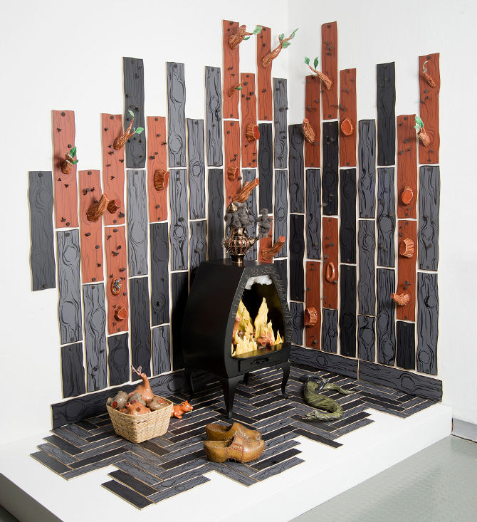
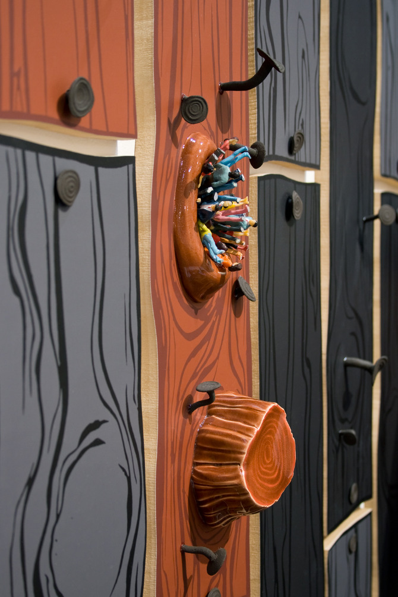
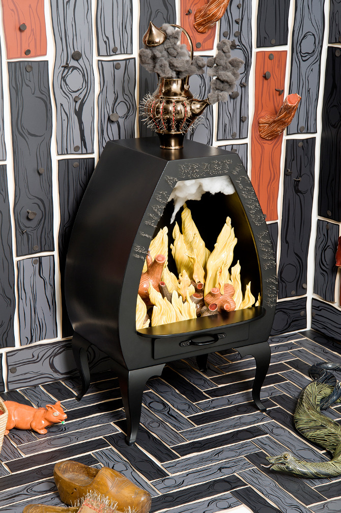
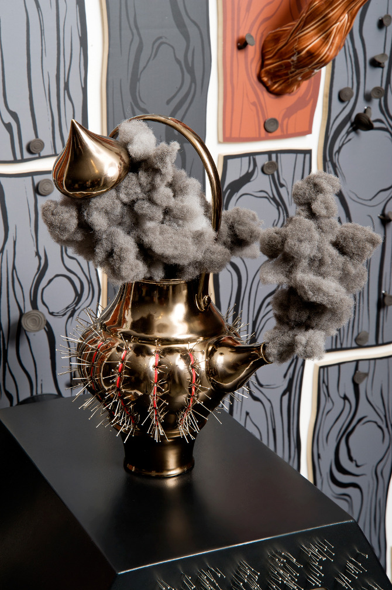

“If I Had A Heart I Could Love You”
Mixed media sculpture and student at London’s Royal College of Art, Malene Hartmann Rasmussen created this art installation for her final based on “how we perceive the world, twisting and changing the perception of the space to create an eerie surreal and otherworldly feeling.” Other projects of hers worth checking out: Cellar Door and Squirrel Gun.
Found on Fast Company’s Co.Design